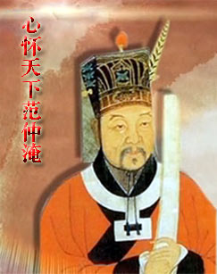

百家讲坛全集
>
百家讲坛2013
>
百家讲坛 心怀天下范仲淹

名称：
集数：
播出时间：
百家讲坛 心怀天下范仲淹
3
2013年10月03日
作为千古名人的范仲淹，官小胆不小，为了天下苍生，他不惧得罪权贵，甚至敢于直接批评皇帝和太后，还居然要让皇帝吃草，由此换来了人生的三起三落。那么，范仲淹究竟有着什么样的苦难身世？他的不要命读书法又是怎么回事？而他的人生“三光”又是一段怎样的故事和情怀呢？
分集介绍
《百家讲坛》 心怀天下范仲淹 （一） 大胆官员
播出时间：
主讲人：
介绍：
2013年10月03日
王启涛
范仲淹命运悲苦，年少失怙，但他志向远大，一心读书报国，通过非比寻常的苦读成为当时远近闻名的青年才俊，顺利晋身仕途。为了天下苍生，范仲淹官小胆不小，不惧得罪权贵，甚至敢于直接批评皇帝和太后，先后三次被贬谪。《百家讲坛》为您深度揭秘范仲淹的“三光”命运。
《百家讲坛》 心怀天下范仲淹 （二） 老子天下第一
播出时间：
主讲人：
介绍：
2013年10月04日
王启涛
范仲淹西北边塞对抗西夏大军时一直和主帅、副帅矛盾重重，并我行我素。那么，范仲淹是怎样被突然调往前线的，他为什么会又一次跟皇帝唱反调，“老子天下第一”的说法又究竟有着什么样的内幕和来历呢？
《百家讲坛》 心怀天下范仲淹 （三） 从战场到官场
播出时间：
主讲人：
介绍：
2013年10月05日
王启涛
大宋西北边境开始走向和平，就在这个时候皇帝却让他们三位将领一起返京回朝要对他们委以重任。不曾料想，仁宗皇帝的一个惊天举动让范仲淹跟他的老上司变成了死对头。这对曾在战场上共同对敌的战友，从此开始了官场上的拼死争斗。那么究竟是什么原因让他们变友为敌，范仲淹都做了哪些让老上司愤怒的事。